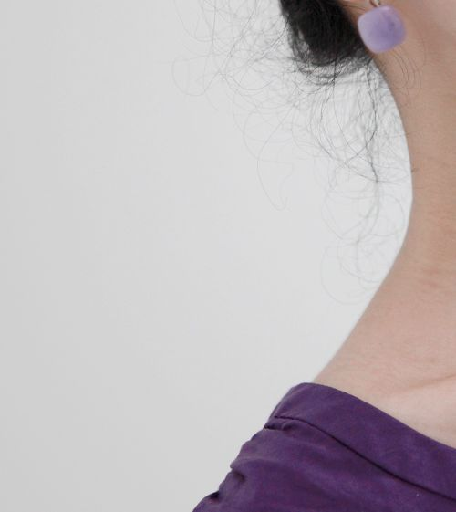
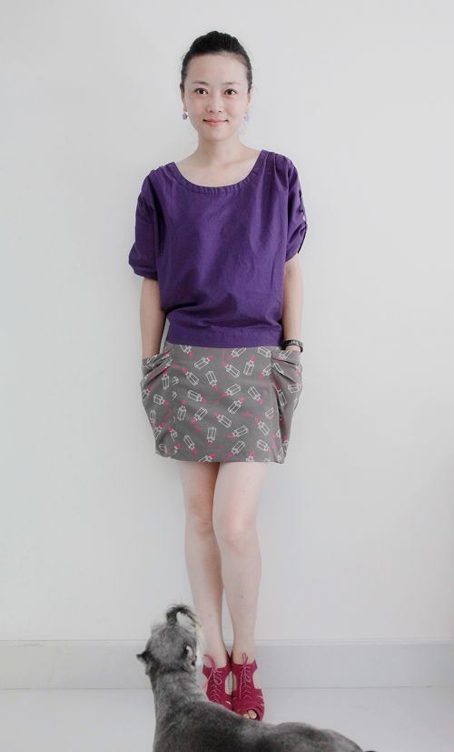

DRESS BLOG @ Aug 04, 2010
送给网络上的人：我们每一个人，在这里既是说者，也是听者，当我们质疑、批判甚至辱骂他人的言论时，其实，我们也面临相同的困境。
面对同样一个信息，别人读到积极而自己读到残酷？你可以评论也可以不评论，你转发什么，写什么内容，选择关注什么，不关注什么，都代表了你对社会，对人性的关注点，如果你觉得自己看到的是一个残酷世界，那么现实生活里，你是不是也看见这些呢？还是说你一直回避它们，虽然它们一直在那里。一切都和你自己的内心相关。
虽然交流充满魅力，但当你一言刚出，即刻众说纷纭时，这种感受，可不轻松。不得不感慨，当我们获得交流的权利时，这种对自己生活碎碎念的交流，也有它的有限性。


21 Responses to “DRESS BLOG”
2010-08-04
姐姐,您真的岁月了.
从6,7年前开始看你的blog,今儿看到第二张照片,不禁黯然.
2010-08-04
人人都岁月，姐姐挺好的
2010-08-04
不岁月的是妖精。
2010-08-04
我觉得一直挺美挺年轻。从四五年前看茶博到现在，这种干净利落淡然而又充满自信的美，没有因岁月而减一分。
2010-08-04
鞋子和裙子搭配得很出彩！
2010-08-04
喜欢那种圆领、灯笼袖的衣服，穿起来有些公主气 ：P
2010-08-04
这种干净利落淡然而又充满自信的美，没有因岁月而减一分
说的是啊！
而且茶身材一直保持的很好，对生活的态度真是值得欣赏！
2010-08-04
嘿嘿,裙子高头也是密密麻麻的小口红啊,小臭美的~
2010-08-04
岁月这东西为气质加分，中国人的审美难道一直停留在幼齿品味？
2010-08-04
我要给你发一封密电码，你没有隐秘留言这样的功能吗？
2010-08-04
没有哇，可以发到tecinese@gmail.com，因为我不是经常看邮箱，所以你发了后通知我一下，免得发生象上次那样，错过玫瑰的E-MAIL。
2010-08-05
我给你发了密电码，也是我的gmail发的。
2010-08-05
第二张照片有点诡异，感觉整个人被拉长了。
2010-08-05
这种干净利落淡然而又充满自信的美，没有因岁月而减一分
说的是啊！
而且茶身材一直保持的很好，对生活的态度真是值得欣赏
＝＝＝＝＝＝＝
没生小孩，当然身材会保持的住!有了小孩，很多女孩子都身材大变样。。。
2010-08-05
妖精姐姐
搭衣达人
美,就一个字
2010-08-05
老去的是岁月，心态，却可以永远保持成熟，从容和淡然。
2010-08-05
茶也经常戴眼镜的啊，可是为什么摘了眼镜，眼睛还是那么好看呢，不像我等眼镜族摘了眼镜好像眼睛底下有一圈印子。
2010-08-06
美女，你的这套衣服我好喜欢 请问什么品牌？
2010-08-06
D&G上衣+日本品牌的裙子。
2010-08-07
你有没有baby啊？
2010-08-13
衣服很漂亮，请问哪里买的？
Leave A Reply
存档只读，评论已关闭。